Ich wohne und arbeite in Zürich, wo ich als Interaction Designerin tätig bin.
Durch meine Interessen am Zusammenspiel zwischen Mensch, Design und Technik sowie der fortlaufenden Digitalisierung fand ich im Interaction Design meine Leidenschaft. Meine Stärken liegen in meiner Vielseitigkeit, welche ich im Interaction Design optimal ausspielen kann. Ich nehme gerne neue Herausforderungen an und behalte auch in Stress-Situationen den Überblick.
Offenheit für Menschen, neue Technologien, sowie Teamarbeit sind für mich die wichtigsten Elemente, um mich weiterzuentwickeln.
Research/Konzeption
Challenge definieren:
Wie können wir Studenten helfen, den vergangenen Tag ohne grosse Einstiegshürde zu reflektieren?
Interviews mit Zielgruppe
Value Proposition Canvas erstellen (Jobs, Pains und Gains)
Benutzergruppen definieren und Persona erstellen
IST-Szenario erstellen (Produkt in Nutzungskontext bringen)
User Journey Map erstellen
Vision festlegen:
«Wie Tapas zum Lernen»: Wir glauben dass der Schlüssel zum erfolgreichen Lernen in der Vorbereitung liegt welche wir dir häpchenweise servieren.
Kreativitätsmethoden wie Brainwriting, Pairsketching und die Worstcase Technik anwenden, um neue Ideen zu generieren
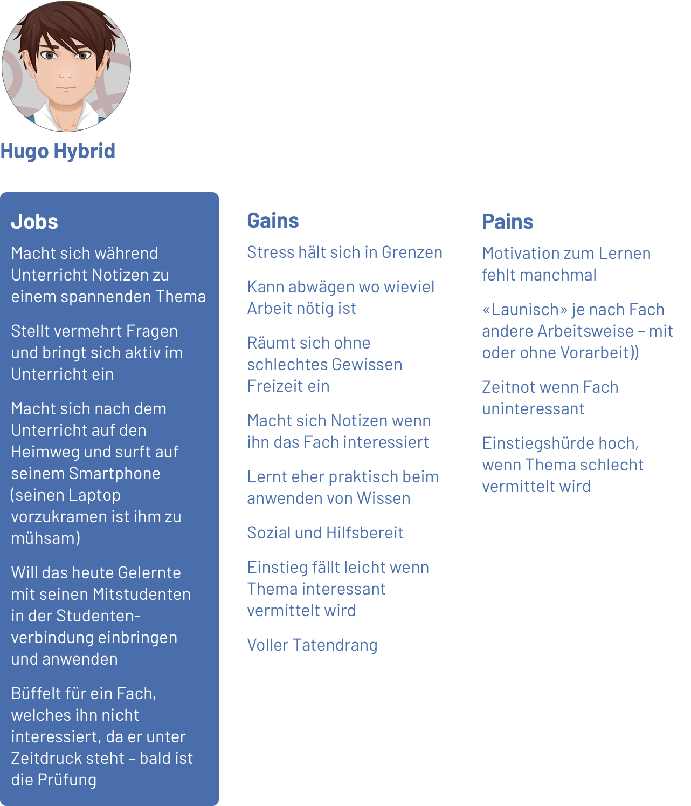
Hier zusammengefasst sieht man die Aufgaben, Probleme (Jobs) welche Hugo, ohne den Gebrauch unseres Produktes, lösen muss, an welche Herausforderungen (Pains) er dabei stösst und was davon ein positives Erlebnis (Gains) erzielt.
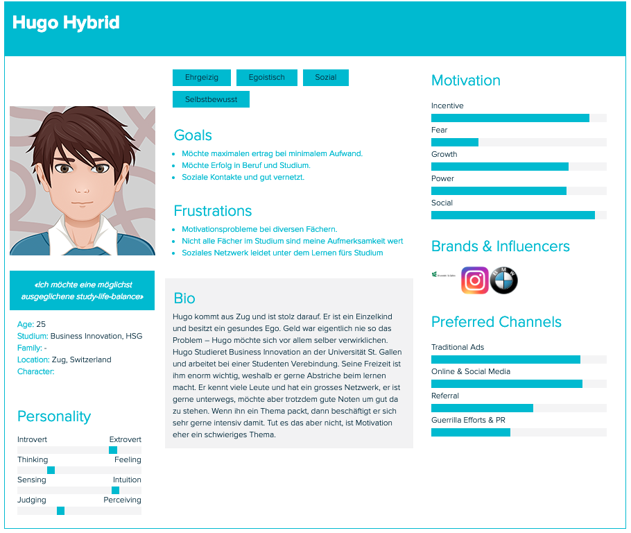
Kurzbio von Hugo Hybrid.
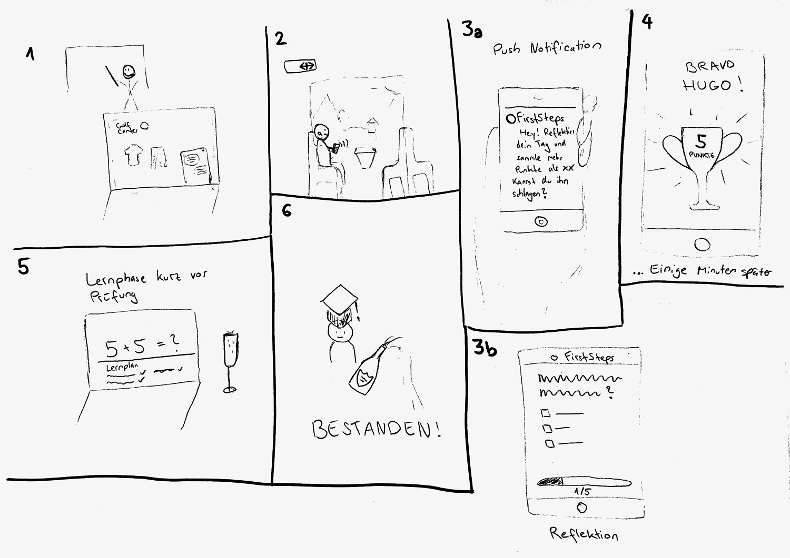
Wie wird unser Produkt im Alltag von Hugo eingesetzt? Szene 1: Während der Vorlesung hat Hugo besseres zu tun wie sich Notizen zu machen. Ihn interessiert das Fach Mathematik nicht. Er sucht nach neuen Golfkleidern und ist auf Instagram. Szene 2: Auf dem Heimweg ist er zu Müde und hat keine Lust sein Material hervorzukramen. Während dem Musikhören erhält er eine Pushbenachrichtigung der First steps App. Szene 3a: Die Nachricht lautet: Hey Hugo! Reflektiere deine Mathematik Stunde und schlage Edi, indem du mehr Punkte erzielst. Szene 3b: Hugo löst die 5 Fragen. Szene 4: Einige Minuten später hat Hugo das Spiel gewonnen und es wird ein Pokal angezeigt. Hugo hat Edi geschlagen und bekommt 5 Punkte. Szene 5: Hugo lernt erfolgreich und hat seinen Lernplan im Griff. Er gönnt sich ein Cüpli. Szene 6: Hugo hat seine Prüfungen bestanden und gönnt sich einen Dom Perignon.
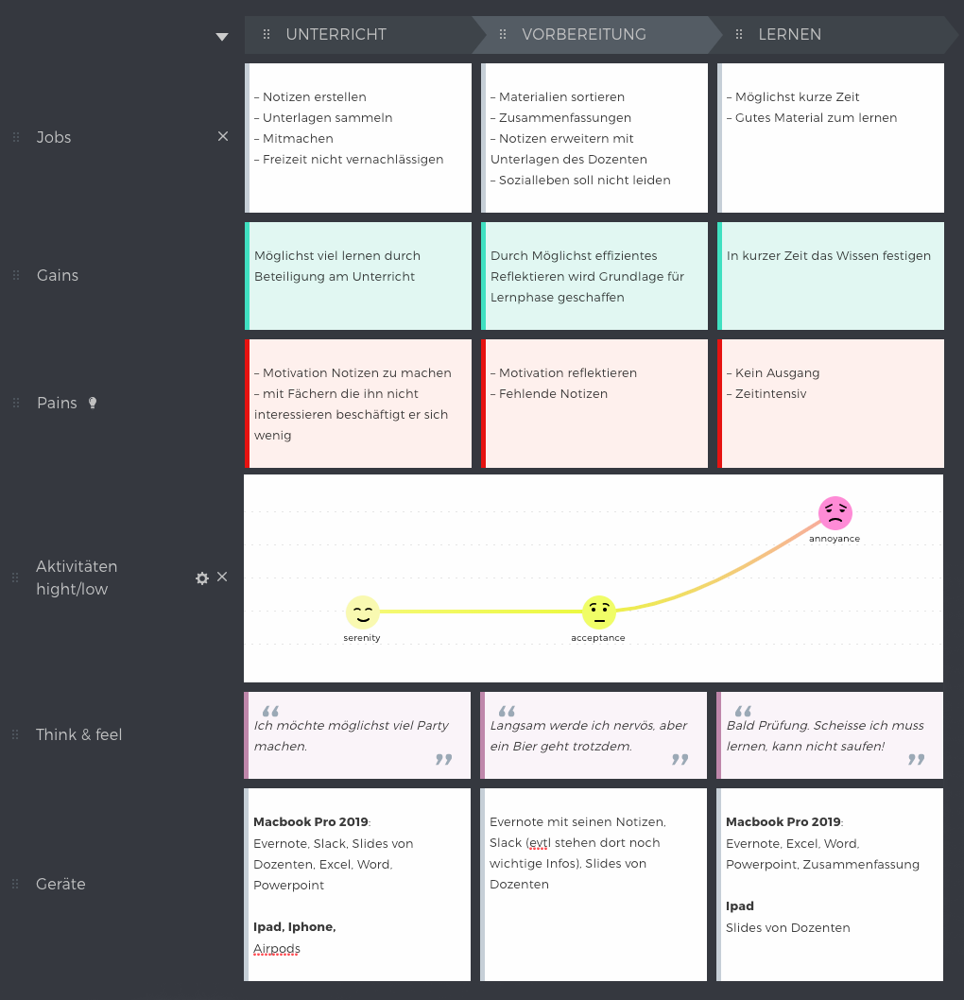
Mit der User Journey Map wird das Nutzererlebnis, das ein User ohne dem Produkt hat, visualisiert. Sie zeigt die Nutzung über eine bestimmte Zeit. Beschrieben werden auch Gefühle des Benutzers. Sie wird eingesetzt um die Projekt-Vision für alle fassbar zu machen.
Design
User Flow Skizzen
Lofi-Prototyp mit User Testings
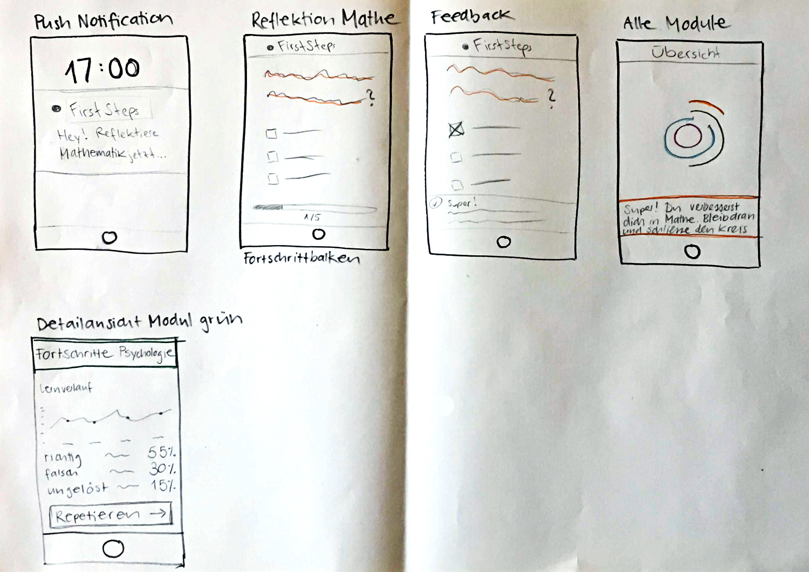
Erste Skizzen des UserflowsUsability-Walkthrough (User-Testing) mit einer unserer Mitstudenten.
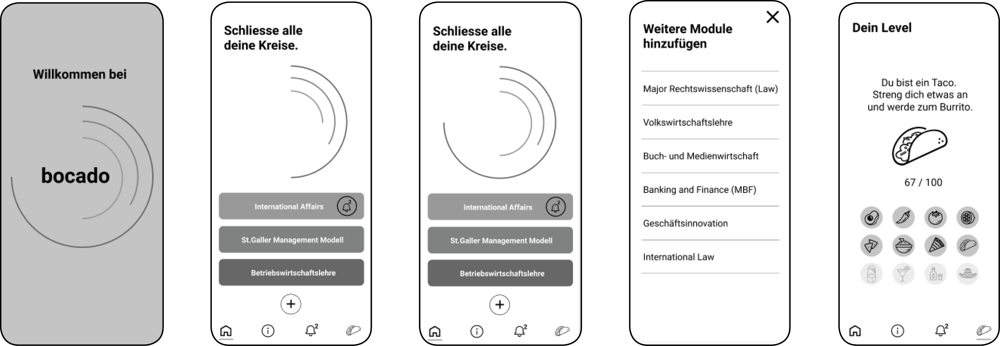
Einige unserer Wireframes
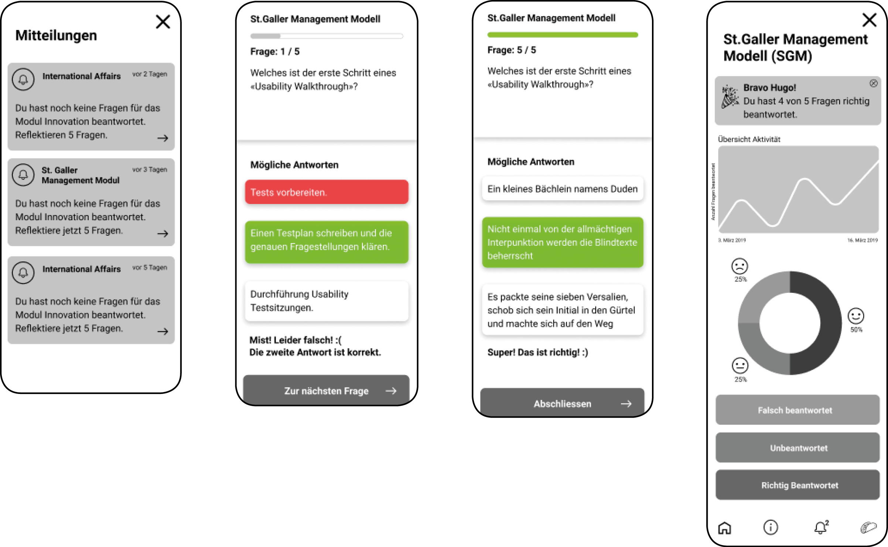
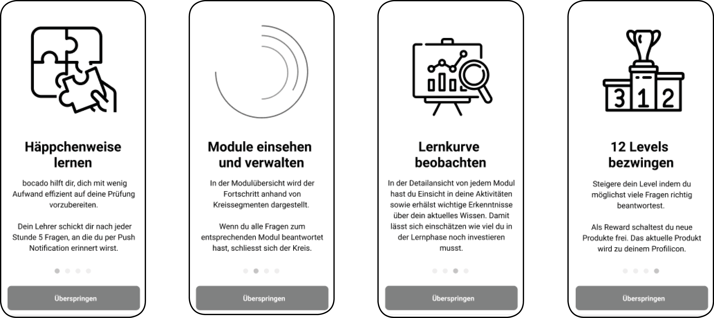
Endprodukt (Hifi-Prototyp)
Übersicht aller laufenden Module mit Fortschrittsanzeige
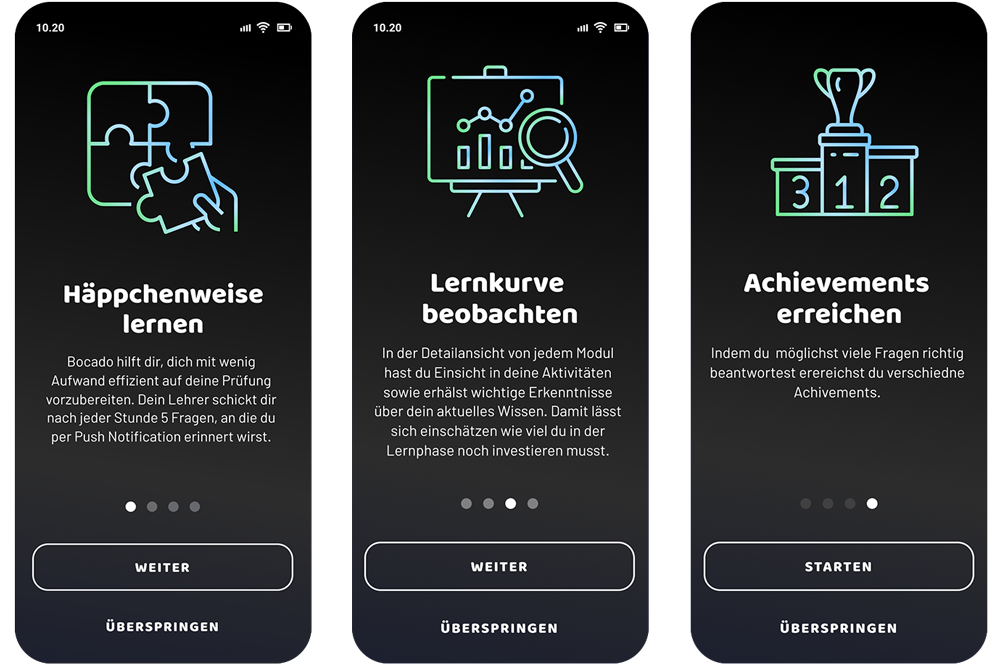
Alle Onboarding Screens mit den 3 wichtigsten Features
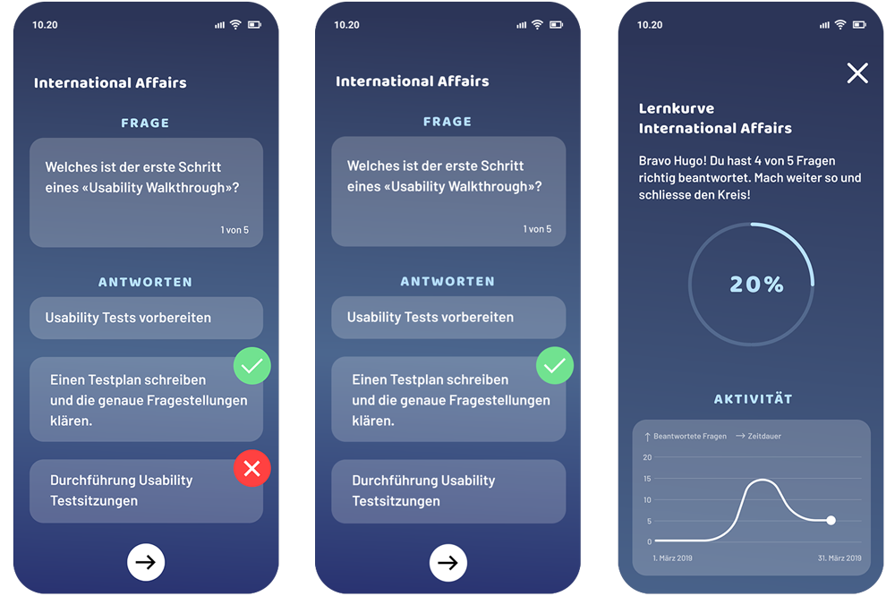
Fragemodus mit anschliessender Auswertung des Moduls International Affairs
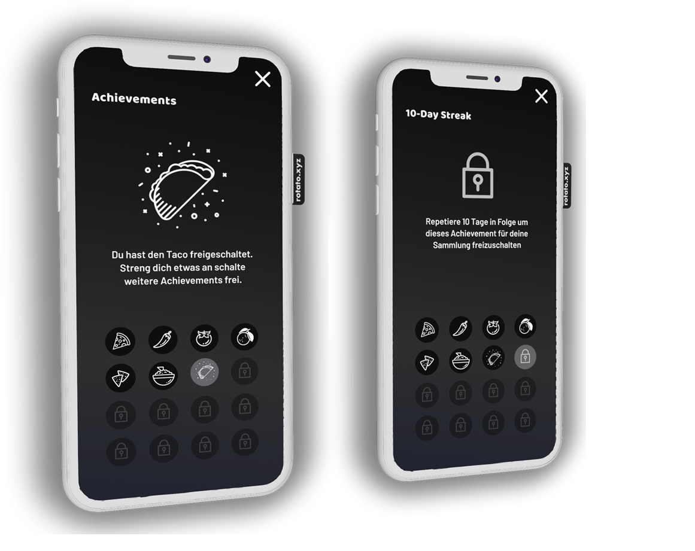
Screen Übersicht der Achievements. Einige sind bereits freigeschaltet für andere muss man noch mehr repetieren.
Namensfindung:
bocado it is! Entschieden haben wir uns für «bocado», was Häppchen auf Spanisch bedeutet. Dies ist perfekt, da es unsere Vision widerspiegelt, den User häppchenweise mit Fragen zu bedienen.
Endprodukt: